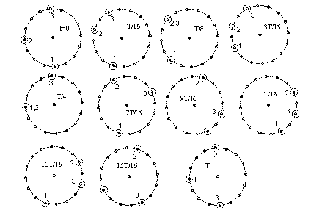

There are n cars waiting at distinct points of a circular race track. At the starting signal each car starts. Each car may choose arbitrarily which of the two possible directions to go. Each car has the same constant speed. Whenever two cars meet they both change direction (but not speed). Show that at some time each car is back at its starting point.
Solution
Label the cars 1 to n according to their starting positions (so we label any car 1 and then go round the track clockwise, labeling the next car 2, the next 3 and so on). If two cars swapped labels whenever they met, then the labels would move at constant speed without ever changing direction. Suppose the car speed is v and the track length is vT, then after time T the labels would all be in their original positions.
Now suppose there is no label swapping. The order of the labels can never change. At time T, there is a car at each initial position, so the labeling of the cars must be a rotation of the initial labeling. Hence after time nT, the cars must be back in their initial positions.


© John Scholes
jscholes@kalva.demon.co.uk
28 Dec 2002
Last corrected/updated 28 Dec 02